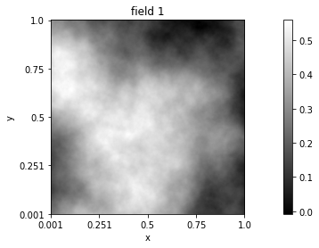
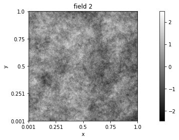
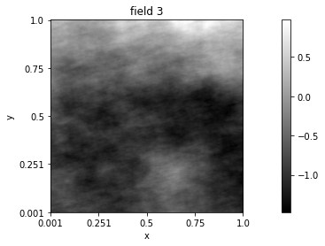

Quick start guide¶
Section author: Frédéric Richard <frederic.richard_at_univ-amu.fr>
Getting started¶
The package PyAFBF is intended for the simulation of rough anisotropic textures of images. Images are sampled from a mathematical model called anisotropic fractional Brownian fields (AFBF) that we will introduce later.
The simpliest way to get a simulated image using PyAFBF is to use the following command lines.
from afbf import tbfield
# Definition of the field to be simulated.
Z = tbfield()
# Simulation of the field.
z = Z.Simulate()
# Display of the simulated field.
z.Display(1)
The object \(Z\) is the mathematical model. It is a random field, which is a collection of random variables \(Z(x)\) defined at any position \(x\) of the plane \(\mathbb{R}^2\).
The image \(z\) correponds to a realization of the field at points of a discrete grid.
The properties of the simulated field \(Z\) depend on the position \(x\) (the field is non-stationary). However, the properties of its increments \(Z(x+h) - Z(x)\) are the same at any position \(x\) (increments are stationary). Variations of these increments may be described by the so-called semi-variogram:
With the package PyAFBF, the semi-variogram of the field can be computed and visualized as follows.
from afbf import coordinates
# Define the coordinates where to compute the semi-variogram; here a signed uniform grid of size 50 x 50.
lags = coordinates()
lags.DefineUniformGrid(50, 1, True)
# Compute the semi-variogram of the field.
Z.ComputeSemiVariogram(lags)
# Display the semi-variogram.
Z.vario.Display()
The AFBF is a particular random field whose semi-variogram has the following polar form
with \(u(\theta) = (\cos(\theta), \sin(\theta))\). This semi-variogram form involves two \(\pi\)-periodic functions \(\tau\) and \(\beta\) , called the topothesy function and the Hurst function, respectively. The topothesy function is non-negative, and the Hurst function ranges in \((0, 1)\). These two functions characterize properties of the AFBF and the aspect of its realizations.
With the package PyAFBF, the graph of these functions can be obtained as follows.
Z.DisplayParameters()
In this first model example, the topothesy and hurst functions were both constant. Such a field is known as the fractional Brownian field. It is isotropic, meaning that its properties are the same in all directions.
However, by changing the form of the topothesy and hurst functions, it is possible to define anisotropic random fields and generate images with oriented textures. This can be illustrated with the so-called elementary fractional Brownian field. The topothesy function of this field is a step function, making the field density
vanishes for some orientations.
# Definition of the field to be simulated.
Z = tbfield('efbf')
Z.ComputeSemiVariogram(lags)
Z.DisplayParameters()
# Simulation of the field.
z = Z.Simulate()
z.name = 'A simulation of an efbf.'
z.Display()
The topothesy and hurst functions can be further customized to obtain a wide variety of simulated textures.
Customed models¶
So as to handle the topothesy and Hurst functions, the package PyAFBF proposes several parametrized representations of periodic functions:
a Fourier representation,
a representation by step functions,
a representation by regularized step functions.
Let us now see how these representations can be used for the field simulation.
- example
A Fourier form for the topothesy function and a step form for Hurst function.
from afbf import perfunction
# Definition of a topothesy function with the Fourier representation (m=4).
topo = perfunction('Fourier', 4, 'Topothesy')
# Definition of a Hurst function in a step form (with m=2)
hurst = perfunction('step', 3, 'Hurst')
# Definition of the random field with functions defined previously.
Z = tbfield('Example 1', topo, hurst)
Z.DisplayParameters()
# Simulation of the field.
z = Z.Simulate()
z.Display()
- example
Constant topothesy function and regularized step form for Hurst function.
# Example 2.
# Definition of a constant topothesy function.
topo = perfunction('step-constant')
# Definition of a Hurst function in a regularized step form (with m=2)
hurst = perfunction('step-smooth', 2, 'Hurst')
# Definition of the random field and simulation.
Z = tbfield('Example 2', topo, hurst)
Z.DisplayParameters()
z = Z.Simulate()
z.Display()
Tuning model parameters¶
Once a random field model is set, PyAFBF offers the possibility to change the parameter values at random while keeping the model form. This change can easily done as follows.
from afbf import tbfield, perfunction
topo = perfunction('Fourier', 3, 'topo')
hurst = perfunction('step-smooth', 2, 'Hurst')
field = tbfield('afbf', topo, hurst)
# Changing values.
field.hurst.ChangeParameters()
field.topo.ChangeParameters()
By default, the interval bounds and step values of a step function are uniformly sampled. But there are other sampling modes that can be set using the method SetStepSampleMode of the class perfunction.
The parameters of a periodic function can be displayed with the method ShowParameters.
topo.ShowParameters()
hurst.ShowParameters()
>>> Coefficient values:
>>> [[0.94456626 0.18237087]]
>>> Step interval bounds:
>>> [[-1.49750096 -0.99357946 -0.16099164 0.42672669]]
>>> Coefficient values:
>>> [[ 3.02283881 1.21206728 -0.08399559 0.16993701 -0.72637963 -0.71637624
0.11408306]]
Alternately to random sampling, parameters of a periodic function can be manually set by indicating the parameter values as arguments of the method SetStepSampleMode:
import numpy as np
stepvalues = np.array([[0.1, 0.5]])
stepbounds = np.array([[-1.2, -1., 0.3, 0.4]])
field.hurst.ChangeParameters(stepvalues, stepbounds)
field.hurst.ShowParameters()
>>> Coefficient values:
>>> [[0.1 0.5]]
>>> Step interval bounds:
>>> [[-1.2 -1. 0.3 0.4]]
Model features¶
The properties of simulated AFBF can be described using some features. These features may serve as texture attributes.
An important field property is its regularity. The degree of regularity of an AFBF is determined by the so-called Hurst index \(H\), which is the minimal value of the Hurst function:
This index is in \((0, 1)\): the lower \(H\), the less regular the field and the rougher the texture.
# Define fields.
topo = perfunction('step-constant')
h1 = perfunction('step-constant')
h1.ChangeParameters(np.array([0.9]))
h2 = perfunction('step-constant')
h2.ChangeParameters(np.array([0.11]))
Z1 = tbfield('field 1', topo, h1)
Z2 = tbfield('field 2', topo, h2)
# Compute field features.
Z1.ComputeFeatures()
Z2.ComputeFeatures()
print('Hurst indices of field 1:', Z1.H, ' and field 2: ', Z2.H)
# Simulate the fields.
z1 = Z1.Simulate()
z1.name = 'field 1'
z2 = Z2.Simulate()
z2.name = 'field 2'
z1.Display(1)
z2.Display(2)
Hurst indices of field 1: 0.90 and field 2: 0.11
 The anisotropy is another important property of the field. It relates to its directional properties: the field is isotropic if it has the same directional properties in all directions, and anisotropic if, at contrary, its properties vary according to the direction.
Quantifying the degree of anisotropy of an AFBF is a challenging issue. The package PyAFBF offers some original features that aim at this quantification. These features are defined as measures of deviation or sharpness of the topothesy or Hurst functions. For instance,
the variance:
the TV-norm:
Since an isotropic field should have constant topothesy and Hurst functions, both measures should vanish if the field is isotropic. By contrast, they should be large if variations of topothesy or Hurst functions are important.
- example
Comparing the field degree of anisotropy.
h3 = perfunction('step-smooth', 2)
Z3 = tbfield('field 3', topo, h3)
Z3.ComputeFeatures()
print('Standard deviation of the Hurst function:')
print('Field 1:', Z1.aniso_indices_hurst[0])
print('Field 2:', Z2.aniso_indices_hurst[0])
print('Field 3:', Z3.aniso_indices_hurst[0])
print('TV-norm of the Hurst function:')
print('Field 1:', Z1.aniso_sharpness_hurst[0])
print('Field 2:', Z2.aniso_sharpness_hurst[0])
print('Field 3:', Z3.aniso_sharpness_hurst[0])
z3 = Z3.Simulate()
z3.name = 'field 3'
z3.Display(3)
Standard deviation of the Hurst function: Field 1: 0.0 Field 2: 0.0 Field 3: 0.13
TV-norm of the Hurst function: Field 1: 0.0 Field 2: 0.0 Field 3: 0.11
Simulating with turning-band fields¶
With the package PyAFBF, the AFBF are simulated using the turning-band method developed in [11]. This method is built as follows.
Consider the issue of simulating an AFBF \(Z\) with a topothesy function \(\tau\) and a Hurst function \(\beta\). For \(K \in \mathbb{N}\), let \(\{ \phi_k, k =1,\cdots, K\}\) be a set of angles in \([-\pi/2,\pi/2)\). For \(k =1,\cdots, K\) , let \(X_k\) be independent fractional Brownian motions with a Hurst index \(\beta(\phi_k)\). We define a random field, called the turning-band field, of the form
where \(\lambda_k\) are some coefficients depending on \(\tau(\varphi_k)\) and \(X_k\) are independent fractional Brownian motions of Hurst index \(\beta(\phi_k)\). Such a field can be simulated by generating some fractional Brownian motions \(X_k\) (in one dimension) and summing them. Moreover, it was shown in [11] that, setting coefficients \(\lambda_k\) appropriately, the semi-variogram of the field \(W\) approximates the one of the field \(Z\). Hence, the AFBF \(Z\) can be approximately simulated by simulating a turning band field \(W\).
Using the PyAFBF package, the semi-variograms of the turning-band field and the AFBF can be computed and compared as follows.
from afbf import coordinates, perfunction
topo = perfunction('step', 2, 'Topo')
hurst = perfunction('step', 2, 'Hurst')
Z = tbfield('field', topo, hurst)
lags = coordinates()
lags.DefineUniformGrid(50, 1, True)
# Semi-variogram of the AFBF.
Z.ComputeSemiVariogram(lags)
# Semi-variogram of the turning-band field.
Z.ComputeApproximateSemiVariogram(lags)
Z.vario.Display()
Z.svario.Display()
The quality of the approximation depends on the number of turning bands. The default number K=500 usually leads to good quality simulations. Reducing the number of bands might create band artefacts as shown next.
# Reducing the number of turning bands to K=20.
Z.InitTurningBands(20)
# Semi-variogram of the turning-band field.
Z.ComputeApproximateSemiVariogram(lags)
# Simulation.
z = Z.Simulate()
z.Display()
Z.svario.Display()
z.Display()
Eventually, it is possible to estimate the semi-variogram of a field from its simulation. This is obtained using the following command lines.
N = 512 # Image size.
# Coordinates where to simulate the field.
coord = coordinates(N)
# Lags where to estimate the semi-variogram.
lags = coordinates()
lags.DefineUniformGrid(50, 1, True)
lags.N = N
# Reducing the number of turning bands to K=20.
Z = tbfield()
# Semi-variogram of the turning-band field.
Z.ComputeApproximateSemiVariogram(lags)
# Simulation.
z = Z.Simulate(coord)
# Estimation.
evario = z.ComputeEmpiricalSemiVariogram(lags)
Z.svario.Display()
evario.Display()